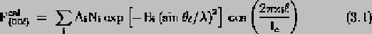
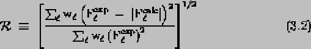
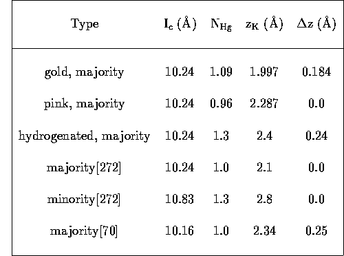
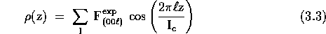

The original intention of the neutron scattering experiments was to do a full structure determination of the different phases of C4KHg through Rietvelt analysis of a powder diffraction pattern. Unfortunately, the neutron absorption cross-section of mercury is so high that taking a powder pattern turns out to be impractical.[184]
The next idea was to look at (hk0) in-plane diffraction rings for the two types of C4KHg samples. It was anticipated that the lower- Tc gold samples might show less in-plane ordering, or perhaps simply a different intercalant arrangement, and that this arrangement would change during in situ hydrogen exposure. Because neutrons are sensitive to hydrogen, unlike x-rays or electrons, this experiment could even allow the determination of the hydrogen positions, should they be ordered. Both the alpha and beta phases were seen using neutron diffraction by Kim and coworkers[130] and Kamitakahara and coworkers,[124] so the prospects for success of this experiment seemed quite good.
In order to have sufficient intensity to see the desired (hk0) peaks within a reasonable amount of data collection time, large samples are required. Initial attempts to synthesize HOPG samples of the size (2×2×0.05) cm3 were unsuccessful because of severe inhomogeneities, much greater than those found in smaller samples. The intercalation compounds formed after 4 or 5 weeks in the furnace were black and still 0.05 cm thick on one end, and obviously gold (or pink) and quite thick on the other end. Despite the fact that these samples (5 batches of them) were somewhat intercalated, they showed no (00l) x-ray peaks, and so were deemed unacceptable for neutron diffraction. Interestingly, small HOPG pieces and Madagascar graphite flakes in the same intercalation ampoule formed well-ordered C4KHg. Presumably the big pieces did not intercalate uniformly because of small temperature gradients across the graphite. In order to prevent thermal gradients from developing, the large HOPG pieces in the second set of batches were packed in glass wool inside the intercalation ampoule. These batches were left in the furnace for about six weeks. The specimens from the second set of batches looked more uniformly intercalated than those from the initial attempts.
The samples were mounted in special gas-loading cans compatible with cryostats of the type designed at the Institut Laue-Langevin. These cryostats are similar to normal liquid-helium ones, such as the Janus Varitemp dewar, except that they have aluminum ``windows'' at the bottom for the admission of neutrons. The gas-loading cans were designed by Dr. D. Neumann of the National Bureau of Standards (NBS) to allow the admission of up to ten atmospheres gauge pressure of gas, more than enough for the hydrogenation experiment. (The details of the hydrogenation experiment are discussed in Chapter 5.) The samples were affixed with aluminum foil or vacuum grease inside thin rectangular aluminum chambers at the bottom of the cans. The chambers had indium o-ring seals. The rest of the gas-loading can consisted of a series of valves and 1/8" stainless-steel tubing connected to the sample chamber with standard Cajon VCR fittings.
After the GIC's were mounted in the cans, they were transported to NBS in Gaithersburg, Maryland, where they were examined using the BT-4 triple-axis neutron diffractometer. Thermal neutrons of wavelength 1.528 Å were monochromated by reflection off an HOPG polycrystal and collimated with standard neutron optics. The diffracted beam was counted by a 3He detector which was interfaced to a PDP-11 lab computer.
Unfortunately on the first trip to NBS, no large C4KHg samples had been produced which had (00l) x-rays. Therefore, small HOPG-based specimens which had been used in the low-temperature measurements were used instead. On the second trip to NBS, there were problems with the reactor, and so no data was taken due to the lack of neutrons. By the time neutrons were available (about 3 weeks), the samples had gone bad, probably due to slow leaks through the indium seals. Thus the only data that was taken was on small (3mm × 3mm × 1 mm) GIC's, which prevented the observation of (hk0) rings or inelastic phonon peaks. The neutron diffraction data consists of (00l) scans on a pink sample, a gold sample, a gold sample with hydrogen, and a gold sample with deuterium. In addition, rocking scans were performed to measure the mosaic spread of each specimen. The mosaic spread of these HOPG-based specimens varied between 1.7° and 2.7°, which are fairly typical values for GIC's.[184] (00l) x-ray and neutron spectra for the unhydrogenated gold sample are shown in Figure 3.7.
Figure 3.7: X-ray and neutron diffraction
(00l) spectra of a gold C4KHg specimen. The
beta-phase peaks are marked with downarrow. a)
Only the Ic = 10.24 Å alpha phase is
clearly visible using x-rays. The small bump to the left of
the (002) may be the beta-phase (002) peak. b) With
neutrons, both the Ic = 10.24 Å alpha
phase and the Ic = 10.83 Å beta phase
show well-defined peaks.
The neutron diffraction pattern shown in Figure 3.7b) implies that the beta-phase constitutes about 10% of the specimen. This is somewhat surprising since the x-ray data in Figure 3.7b) shows only one set of peaks. A careful scrutiny of the x-ray spectrum allows one to identify a candidate for the beta-phase (002) peak, but nonetheless one would guess from the x-ray data that the beta-phase is present only in a very small amount. The unexpected presence of the beta-phase in this sample invites the question, Do all gold samples contain some beta phase? It seems that x-rays are insufficient to answer this question. Partly this is due to the scattering of the x-rays by the sample-encapsulating tube, but it is also partly due to the limited skin depth of x-rays. Timp made a related comment in reference to his magnetoresistance measurements: ``...the conventional (00l) x-ray diffraction-characterization technique is an inadequate measure of the homogeneity of the staging order for SdH measurements, because the magnetoresistance measurement for homogeneous sytems is sensitive to the bulk properties of the compound while molybdenum Kalpha x-ray radiation has an extinction depth of only 35 mum (in stage-1 KHg-GIC's).''[245] The lack of correlation between the (00l) x-rays and Tc suggests that Timp's comments about magnetoresistance apply equally well to superconductivity. Thermal neutrons, on the other hand, have a penetration depth of about one centimeter, which is more than enough to see the whole thickness of a GIC.[184] The idea that all gold stage I KHg-GIC's contain the beta phase may be important for understanding the hydrogenation experiments, as discussed in Chapter 5.
An attempt was made to add hydrogen to the gold sample whose spectrum is shown in Figure 3.7. Unfortunately the peaks of the sample could not be found after its transfer from a glass tube to a gas-loading can. This transfer was probably unsuccessful because there was no glovebox available at NBS, and the transfer is too time-consuming for a glovebag. Instead of the in situ hydrogen addition, a gold specimen which had already been exposed to hydrogen was studied without transfer to a gas-loading can. The (00l) data from this sample, whose Tc was 0.84 K before hydrogenation and 1.54 K afterward, are shown in Figure 3.8a). The (00l) peaks of an unhydrogenated pink C4KHg specimen are presented for comparison in Figure 3.8b). These spectra are believed to be the first neutron diffraction scans on C4KHg which show only the alpha phase; previous experiments by Yang[272] and Kim[130] showed both alpha and beta phase peaks, just as Figure 3.7b) does. The spectrum of the deuterated sample is not shown here because these data were marred by problems with sample motion during the scan, while the other neutron scans were unaffected by sample movement.
Figure 3.8: Neutron diffraction spectra of
a gold C4KHg specimen with hydrogen and a pink
specimen without hydrogen. Note the lack of beta phase
in either sample. a) Spectrum of a gold sample whose
Tc was 0.84 K before hydrogenation and 1.54 K
afterward. b) Spectrum of a pink C4KHg
sample.
The two spectra shown in Figure 3.8 do not look very different from one another. In fact, none of the three neutron diffraction patterns shown here look very different from one another except for the presence of the beta-phase peaks in the gold sample without hydrogen. In order to be able to intercompare the spectra in a more quantitative way, the integrated intensities of the diffraction patterns were fit to a 5-layer model[151] of the unit cell, using a gradient-least squares optimization algorithm to obtain the residual-minimizing parameters. Only the majority alpha-phase intensities were fit because the number of peaks in the beta phase was too small.
The method used to fit the integrated intensities is a
standard one, and is similar to that used by Yang and
coworkers to fit their C4KHg neutron data.[272] Essentially the method is
the following: the data are converted to relative structure
factors Fexp by dividing the integrated
intensities through by the intensity of the highest peak. The
experimental relative structure factors are then compared to
the calculated ones, which are obtained from

where the sum is taken over the 6 layers of the model. Thus the subscript i stands for the properties of the element in layer i. A i is the neutron scattering factor of the element in layer i, N i is its stoichiometry (with respect to carbon = 4), B i is its Debye-Waller factor, thetal is the diffraction angle, Lambda is the wavelength of the neutrons, and z i is the c-axis position of the ith layer with respect to the center of the sandwich. The definitions of the various layer positions are illustrated in Figure 3.9.
Figure 3.9: Definition of the distances
zi used in the fits to the neutron diffraction
data (from Ref. [272]). The
distances are measured from the center of the sandwich,
halfway between the mercury layers. Deltaz, the Hg
layer splitting, is twice the distance of the Hg layers from
z = 0.
Once the theoretical structure factors were calculated using a given set of parameters and Eqn. 3.1, the quality of fit was quantified using a standard expression for the residual parameter R.[101]The definition of R used here weights the individual structure factors by their experimental uncertainties, and is considered superior.[128] The R used here is called the normalized standard deviation and is given by:[101]

Here Flexp is the observed structure factor, Flcalc is the calculated structure factor, and wl is the experimental uncertainty in Flexp. This experimental uncertainty comes from instrumental factors and the height of the background in the spectrum. The definition of the residual in Equation 3.2 is different from that used by Yang and coworkers.[272] Therefore the new residuals reported here should not be compared with those of Ref. [272], but should only be used for intercomparison. A gradient least-squares routine[21] was used to optimize the parameters by minimizing the magnitude of R.
Most of the parameters used to calculate the structure factors were known beforehand. The neutron scattering lengths A i can be found in any standard nuclear data reference book,[177] and the Debye-Waller factors were taken from the work of Yang and coworkers.[272] These Debye-Waller factors were BC = 1.66 Å2, BK = 0.78 Å2, and BHg = 4.75 Å2. Ic was found from the peak positions in the (00l) scans, and so was not used as a parameter in fitting the integrated intensities. The potassium atoms scatter neutrons so weakly compared to carbon and mercury that the K positions and stoichiometry have only a small effect on the fit. Therefore the K/C relative stoichiometry was fixed at 0.25. The remaining parameters were zK, the position of the potassium layer, Deltaz, the position of the mercury layer, and N Hg, the stoichiometry of the mercury layer.
In Table 3.3, the values of these parameters obtained from fits to the diffraction patterns shown in Figures 3.7 and 3.8 are compared with the numbers found by Yang et al.[272] The residual index found for the fit to the pink sample's data is 0.036, while that found for the gold sample is 0.044.

Table 3.3: Parameters obtained from fits to
the C4KHg neutron diffraction data. NHg
is the number of Hg atoms per 4 carbon atoms. Additional
parameters for the hydrogenated sample: hydrogen position =
3.9 Å; hydrogen/carbon ratio = 1.0. The parameters
reported for the hydrogenated sample are not well constrained
since the residual in this case is considerably higher than
for the other diffraction patterns.
For the hydrogenated sample, there were other free parameters besides those listed in the table. These were the hydrogen position, stoichiometry, and Debye-Waller factor. A ballpark starting value for the H Debye-Waller factor, 4.58 Å2, was estimated from the inelastic neutron-scattering data taken on C4KHx by Kamitakahara, Doll, and Eklund,[218] using a procedure suggested by Kamitakahara.[122] (This procedure is briefly described in Appendix A.) Unfortunately, even with all these free parameters, attempts to fit these data with reasonable numbers produced unacceptably high residual values, on the order of 0.2. Here ``reasonable'' is defined very liberally to mean that the stoichiometries and atomic distances were all required to be positive. To obtain even R = 0.2, it was necessary to use a hydrogen stoichiometry of 1.0 and a hydrogen position of 3.9 Å, closer to the graphite plane than the potassium plane. Therefore, the values obtained from the fit to the hydrogen diffraction pattern are included only for completeness, and are not to be taken too seriously.
The failure of the 6-layer model to fit the hydrogen data is not easily understood. It does not seem likely that hydrogen causes a drastic rearrangement of the atomic positions along the c-axis considering that Ic is unchanged by hydrogenation within experimental error (see Figure 3.8). The best course would probably be to fit (00l) x-rays to determine the positions and stoichiometries of the non-hydrogen layers. These other layers' parameters could then be fixed in fitting the neutron diffraction pattern, where only the hydrogen parameters would be varied. The available x-ray diffractometer cannot provide enough (00l) x-ray peaks to determine all the K and Hg parameters, though.
It was decided to synthesize hydrogenated single-crystal C4KHg specimens so that their entire (hkl) spectrum could be imaged in one scan with an x-ray precession camera.[222] Then there would be enough peaks to determine at least the K and Hg stoichiometries, which could then be used as input to the fits for the hydrogenated samples. In the one attempt made at a precession camera study of an unhydrogenated C4KHg single crystal, promising results were obtained. This work was not completed due to time constraints, but it deserves a more sustained effort.
At this point it is most fruitful to return to a discussion
of the lessons of Table  . The first major point
is the good agreement between the parameters obtained for the
pink C4KHg specimen and those found by Yang et
al.[272] These samples
appear to have been basically identical. The gold sample
appears to have been slightly more mercury-rich than the pink
specimen and Yang's majority phase. The parameters for the
gold sample also indicate that its central mercury layer was
slightly split, but that its potassium plane was closer to
the center of the sandwich. Considering that the differences
among the parameters of the various samples are small, and
that each type of C4KHg has been measured only
once, any conclusions drawn from the numbers in this table
must be considered quite tentative.
. The first major point
is the good agreement between the parameters obtained for the
pink C4KHg specimen and those found by Yang et
al.[272] These samples
appear to have been basically identical. The gold sample
appears to have been slightly more mercury-rich than the pink
specimen and Yang's majority phase. The parameters for the
gold sample also indicate that its central mercury layer was
slightly split, but that its potassium plane was closer to
the center of the sandwich. Considering that the differences
among the parameters of the various samples are small, and
that each type of C4KHg has been measured only
once, any conclusions drawn from the numbers in this table
must be considered quite tentative.
In order to get a better feel for the real-space structure implied by the numbers in the table, the structure factors can be Fourier-tranformed to yield some information about the nuclear positions. The analytic form of the Fourier transform is

where rho(z) is the nuclear scattering intensity as a function of position along the c-axis.[272] In order to do this calculation, one must find out the correct signs for the experimental structure factors from the calculated ones, since the ratios of the integrated intensities are necessarily positive. The density map that results from this construction is called a Patterson function.[222]
Eleven peaks is rather few to perform such a transform since aliasing will occur on length scales of the order Ic/11 0.9 Å. Therefore, if a good fit to the data has been obtained, a reasonable procedure is to use calculated structure factors to extend the experimental structure factors up to higher l. This extension was performed up to l = 50 for the pink and gold samples. Extending the data of the hydrogenated sample seemed to be a questionable idea considering the poor quality of the fit. Patterson functions were also calculated by the authors of Ref. [272], so comparison with their transforms can also be made. Such comparisons are shown in Figure 3.10.
Figure 3.10: Real-space structure of the
majority phase of C4KHg along the c-axis as
calculated from the Fourier transform of the extended neutron
diffraction data. All plots were scaled to a carbon peak
height of 1.0. a) Plot of nuclear scattering intensity versus
distance along the graphite c-axis for a pink sample (*) and
a gold sample (circ). b) A similar plot comparing the
structure of the MIT pink sample (*) to a structure
(circ) calculated from fit parameters reported by Yang
et al.[272]
While the Patterson plots shown in Figure 3.10 do not give any new information, they do serve to deliver the information in Table 3.3 in more easily digestible form. There do seem to be small differences between the pink and gold samples that are larger than the difference between the pink sample and Yang's parameters for the majority phase. Since these measurements have only been performed on a few specimens, it is necessary to be very cautious. The apparent shift in the potassium peak position between the pink specimen and Yang's specimen is meaningless because the potassium layer contributes so little to the overall scattering intensity.
The only distinction between the higher- Tc pink GIC's and the lower- Tc gold ones that can be made with confidence is that the gold samples are more likely to contain the minority beta phase. This assertion is well-founded because it corroborates an observation already made with (00l) x-rays. Because beta-phase peaks were observed with neutrons in a specimen which appeared single-phase from x-rays, it is tempting to conclude that all gold lower- Tc C4KHg samples contain the beta phase. The paper of Yang and coauthors suggests some structural differences between the majority and minority phases. The possible consequences for superconductivity of the slightly higher Ic and Hg content of the beta phase are discussed in Chapter 5.
There are other ways to measure the stoichiometry of
compounds that provide an important check on the parameters
obtained from fits to diffraction data. Among these are
Rutherford backscattering spectrometry (RBS), weight uptake
measurements, and wet chemical analysis. The results of these
experiments on GIC's are discussed in the next section.